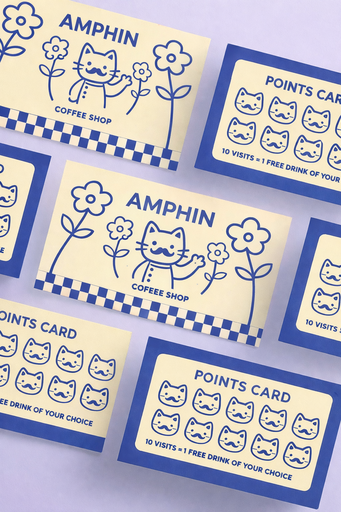

← All projectsAm Phin

BRAND IDENTITY / ILLUSTRATION / Independent concept
Am Phin
Coffee
Coffee, stories, and smiles — a character-led identity inspired by the warmth of everyday coffee rituals.
01 / The story
Beyond the
ordinary.
THE CHALLENGE ↘
Coffee shops often share the same visual language. Am Phin needed a distinctive identity that could reference Vietnamese phin culture without relying on clichés.
THE SOLUTION ↘
A charming cat mascot, blue-and-cream palette, tactile illustrations, and friendly applications create a recognizable brand world across touchpoints.
02 / Creative direction
“A familiar ritual, given a playful new character.”
03 / Visual world
A brand you can
feel.



NEXT PROJECT ↗
Kombu Cha Cha Cha ↗